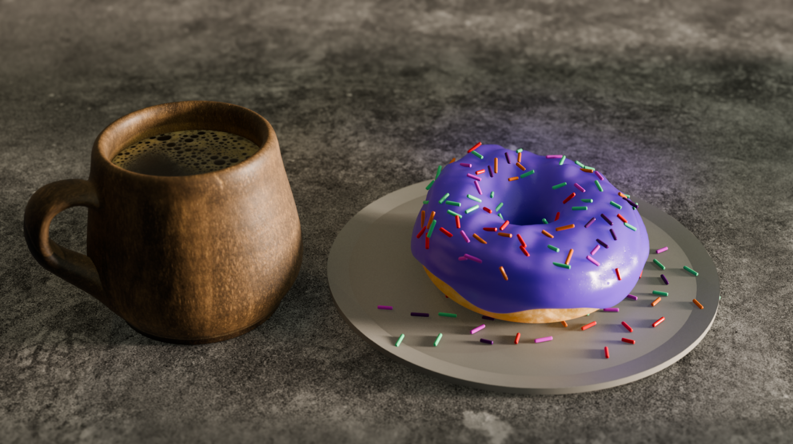

Apollyon

Apollyon was the first game I made with a team and was also the final project for my junior year of Questar III gaming and Multimedia. It follows Ivan, an employee for a russian mining company, unknowingly going on a suicide mission to kill a newly awakened eldrtich god who is threatening earth. I did the coding and level design for everything in the game in construct 3. Some of the features I am most proud of are the drone mechanic that alows you to deploy a tiny rover to squeeze into small areas and the "bossfight" chase sequence.
Bready Or Knot: Fully-Baked

Bready or Knot: Fully-Baked is a game myself and a group of 5 other humans made for a year long project for our Gaming and Multimedia class. It centers around our protagonist named Evil Baguette and its adeventures through the land of Loafric (kitchen) on his quest for revenge! Through the game it fights a variety of food themed enemies and bosses with the assistance of his best frienemy, Checkpoint Flag. I was the main programmer and producer of the project and the game was made in construct 3. I am most proud of the boss ai because it has made the boss fights very different and interesting for everyone and allows them to pull off some nasty combos against you.
Dounut & Coffee

A simple Donut I made in Blender. It was the very first thing I made in Blender following a 4 hour long tutorial. Although I am no artist this tutorial and project helped me learn and grow my artistic capabilities. I am most proud of the coffee mug itself because most other people in my class had issues designing specificly the handle but I was able to figure out a way to do it easily and spread the knowledge.